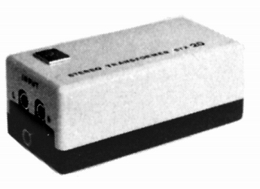

STX20

■価格 45,000円■型式 MC型カートリッジ用昇圧トランス■一次インピーダンス 85〜170Ω■二次インピーダンス 10kΩ■昇圧比 1：10■最大許容入力 ■周波数帯域 30〜20,000Hz±1dB■セパレーション ■高調波歪率 ■重量 0.24kg■寸法 W6.3×H4.0×D12.0�p■発売 1974〜75年■販売終了 1989年頃■備考 価格は1975年頃のもの1984年には48,000円
EMTのインデックスへ